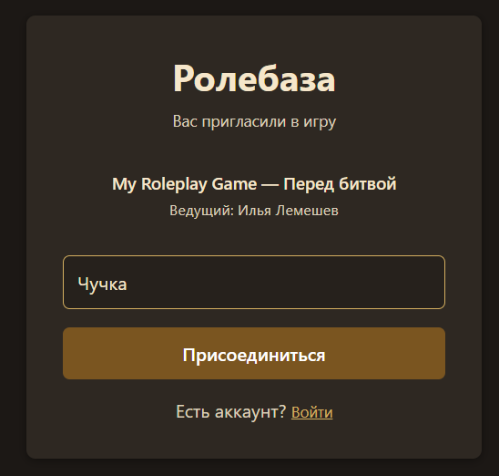
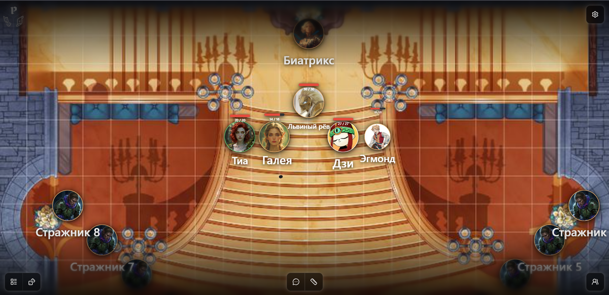
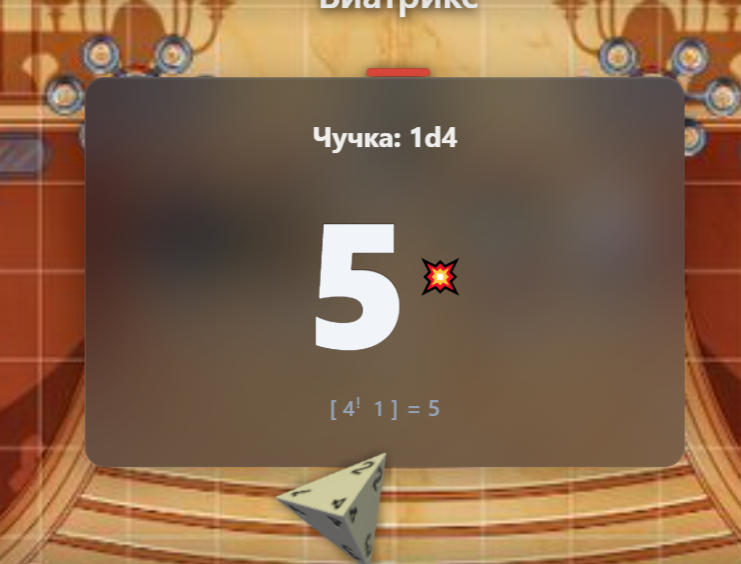
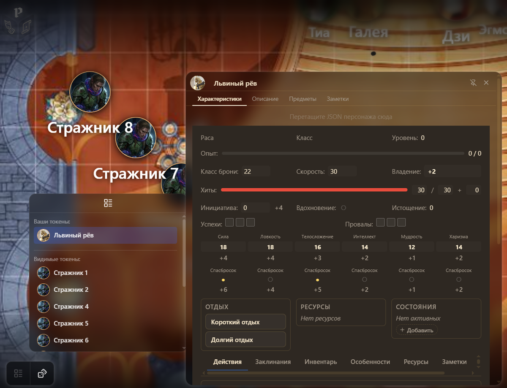
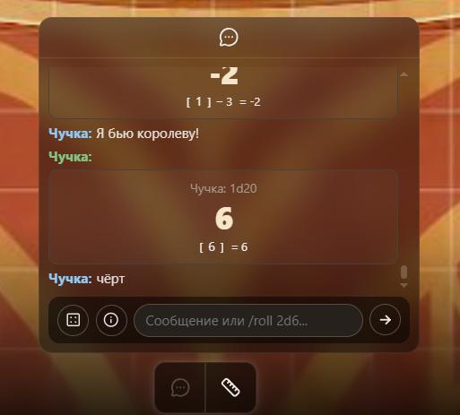
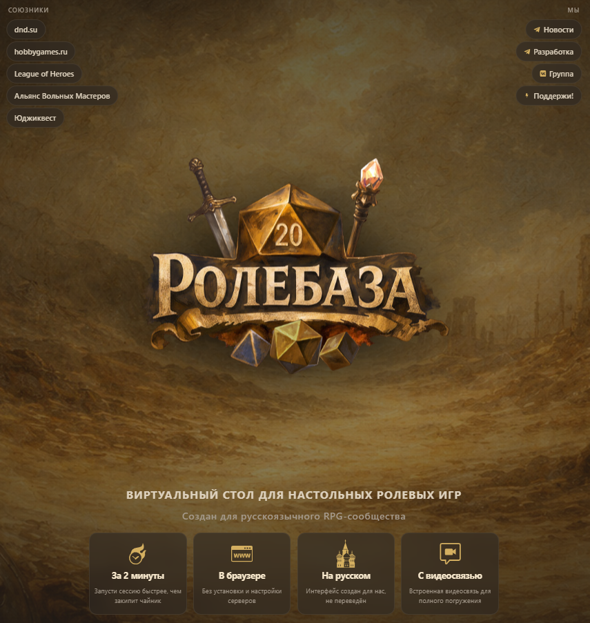
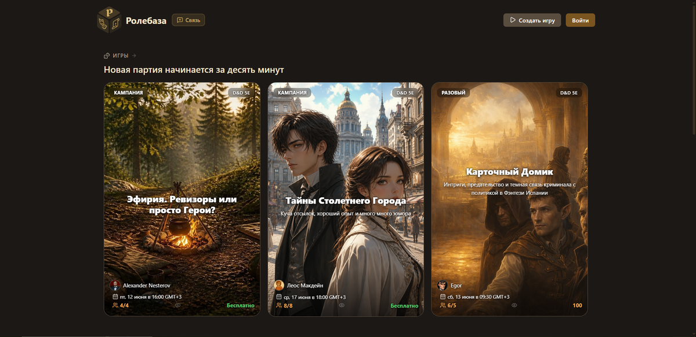
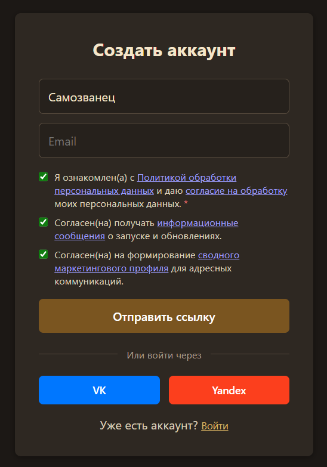
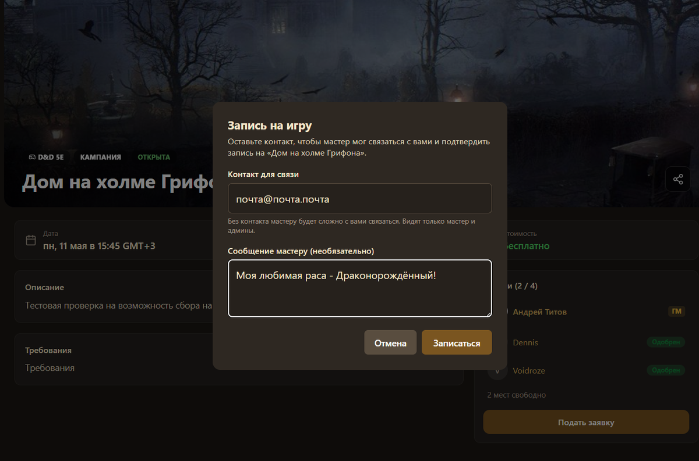

Гайдик по самому простому столу для НРИ (Ролебаза) для игроков
Приветствую всех, кто перешёл на эту страницу и читает этот текст, сегодня я собираюсь рассказать вам о самом удобном (конечно же, по моему мнению) виртуальном столе для настольно-ролевых игр - Ролебазе (РБ).
Плюсы этого стола:
- Русский интерфейс - я не такой человек, для которого русские разработчики - уже плюс, но работать на родном языке всегда удобно.
- Бесплатный - разрабы обещают платную подписку, но пока её нет всё бесплатно (да и вряд ли они сделают уже существующие функции платными).
- Активное развитие - обновления выходят неприлично часто, в каждом добавляется очень много всего, а если вам чего-то не хватает - смотрите следующий пункт.
- Отзывчивая поддержка - если вы заметили баг, отсутствие какой-нибудь функции или у вас есть вопрос - не стесняйтесь нажать на кнопку «Связь». У меня лично было такое, что я написал в поддержку по поводу невозможности обрезать картинку для токена, на следующий день эту функцию добавили!
Минусы пока тяжело назвать, так как в следующем же обновлении половина списка уже может быть не актуальна. Поэтому перейдём к основной части!
Для игроков со своим мастером (База)
Данный раздел для тех кого Мастер просто пригласил за этот стол и они не собираются пользоваться им больше, чем в игре.
- Вход:
Просто перейдите по ссылке, которую вам скинул Мастер, введите никнейм, и войдите как гость. Если хотите - войдите в аккаунт через ТГ, ВК, Яндекс, или с паролем.

Важное примечание! Проверьте, чтобы на устройстве был разрешён микрофон для браузера, а в браузере - для РБ, особенно актуально для телефонов.
- Интерфейс:
После входа нас встречает вот такой интерфейс:

Всё интуитивно понятно, но это гайд, поэтому рассмотрим каждую кнопку.
- Бросок костей. Основа основ! Кнопка слева внизу, правее от «Токенов». Открывается вот такое меню, которое на ПК даже можно двигать и растягивать.
Нажав на обозначения костей слева, проиграется красивая анимация и выдаст результат. Если нажать на цифры правее то кости бросятся несколько раз и результат суммируется. На кнопки ниже можно выбрать, кто будет видеть результат: все, вы и мастер, или только вы. Также здесь можно сделать броски с преимуществом и помехой. Крайняя кнопка «Взрыв» бросает кость ещё раз если выпадает максимальное значение, как на картинке (может у меня мало опыта, но я раньше не видел такую механику).

Ползунок ниже позволяет добавить положительный или отрицательный модификатор.
- Токены.
Нажав на кнопку левее костей вы сможете посмотреть все токены, которые вы можете видеть на карте. Нажав на токен, вы можете (если мастер позволил) посмотреть инфо о нём. Подробнее об этой инфе я буду рассказывать в гайде для мастеров, но в общем, там обычный лист персонажа.

- Чат. Кнопка в центре снизу. Как не удивительно, это чат. Я должен объяснять что это такое? Ладно, через левую кнопку можно открыть меню «Бросок костей», правее (кнопка i) показывает множество команд для специфических бросков, я редко этим пользуюсь, но там инфы для отдельного гайда, поэтому,
обещаю, если я займу 1-5 место в этом конкурсе, я сделаю гайд с полным обзором всех базовых команд!

- Режим измерения расстояния. Кнопка правее чата переводит вас в режим измерения расстояния, нажатиями вы строите ломаную, рядом с каждым звеном которой выводится его длина. Выйти из режима можно, нажав на Esc или на ту же кнопку.
- Игроки. В этом окне всё, что связано со встроенным коммуникатором (это слово мне Алиса подсказала, не смотрите так). Здесь можно подключить микрофон, изменить громкость игроков, поднять руку.
- Настройки. Я не буду объяснять каждую кнопку, скажу только, что ползунок изменяет громкость глобально всего сайта, а кнопка «Установить приложение» устанавливает обычное веб-приложение, чтобы не запускать весь браузер.
- Не-Кнопки. Свайпами вы можете передвигаться по полю, ограниченным мастером. Колёсиком или двумя пальцами увеличивается/уменьшается масштаб. Нажав на токен вы можете посмотреть такое же инфо о нём, как через меню «Токены». Если мастер присвоил токен(ы) вам вы сможете передвигать его(их) по карте.
Для продвинутых игроков и игроков без мастера.
Данный раздел для тех кому интересно найти на Ролебазе компанию для игры или они просто хотят лучше разбираться в этом сайте.
- Вход. "А где здесь играть-то?" - Спрашивают новые игроки (и я среди них первый), которые вбили в поиск "Ролебаза", перешли по первой ссылке и увидели это:

Прикол в том, что это - страница-презентация проекта, где можно зарегистрироваться как первопроходец и почитать инфу. Но не играть!
Чтобы зайти на саму Ролебазу вбивайте "Ролебаза Бета" или просто перейдите по этой ссылке. Вот как выглядит нужная нам страница:

Нажимаем «Войти» и регистрируемся, я советую через ВК или Яндекс, но создам новый акк с почтой:

К слову, если вы зарегистрируйтесь до выхода РБ в релиз вы получите титул "Первопроходец"!
На главном экране вы сможете найти
- Игры, на которые можно записаться:

- Информацию об обновлениях.
- Сокровища - наборы для игры (которые тут называются Компендиумы), среди которых и мой "Саундтрек Undertale"😉, кастомные системы и готовые столы.
- Других пользователей
Через выпадающее меню вы можете изменить профиль на свой вкус, создать свои компендиумы и столы, но об этом я уже расскажу в гайде для мастеров.